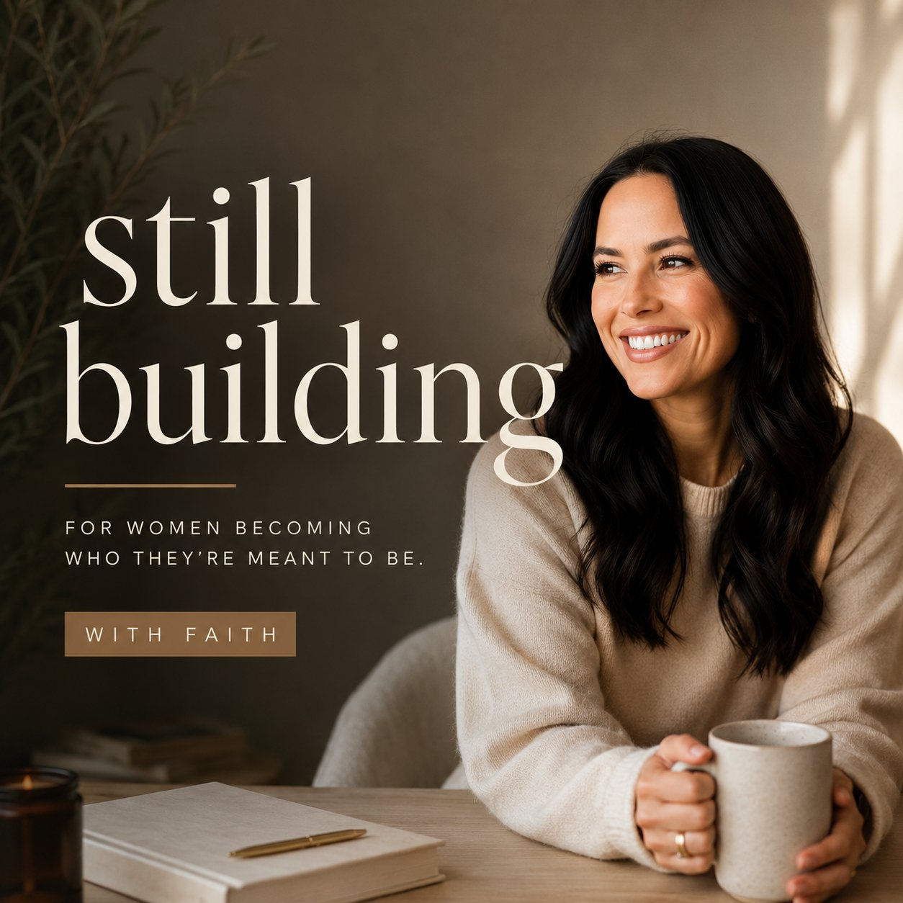

We Grew Up Together Then We Had To Choose Each Other
If we had been adults when we met — we would have been that crazy couple that got married within weeks. Thirty years later — here we still are.
For the woman who is still figuring it out — and not ashamed to say so.
Still Building is an honest, personal conversation about the parts of life that don't get talked about enough. Grief. Love. Friendship. Building for joy instead of survival. Told from the middle — where most of us actually live.

Thirty years with Johnny. How we met at 15, broke up, got back together, and learned what love actually asks of you over time.
Dedicated to Luke, my dad, Enrique, and my mom. An honest conversation about the loss we carry quietly — and what grief teaches us about how to live.
The women who have known you your whole life. The ones you found in a new city. And the 3am friendships that are worth every moment of the waiting.
Written reflections on each episode — a space to go deeper.
If we had been adults when we met — we would have been that crazy couple that got married within weeks. Thirty years later — here we still are.
I dedicated this episode to Luke, my dad, Enrique, and my mom. Grief is one of the things we carry the longest and talk about the least.
"We spend so much of our lives building. And then somewhere in the middle — we start asking different questions. Not how do I build more. But what do I actually want."
Still Building is a solo podcast about becoming — honestly. From becoming a mother at 17, to building a decades-long marriage, to navigating loss, reinvention, and personal growth — these conversations are grounded, transparent, and deeply relatable.
If you're in a season of reflection, rebuilding, or quiet growth — you're in the right place.
Read More About Faith